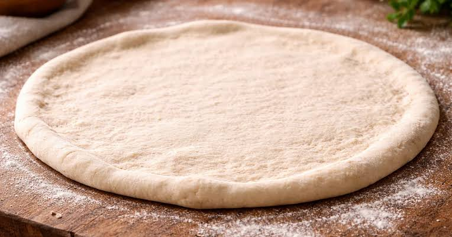

Masa para pizza

La masa para pizza es la base de una de las preparaciones más populares del mundo. Aunque existen numerosas variantes, esta receta destaca por su sencillez y por ofrecer una textura equilibrada, con un exterior ligeramente crujiente y un interior suave. Además, puedes adaptarla fácilmente a tus gustos añadiendo distintas hierbas aromáticas y utilizando diferentes tipos de harina.